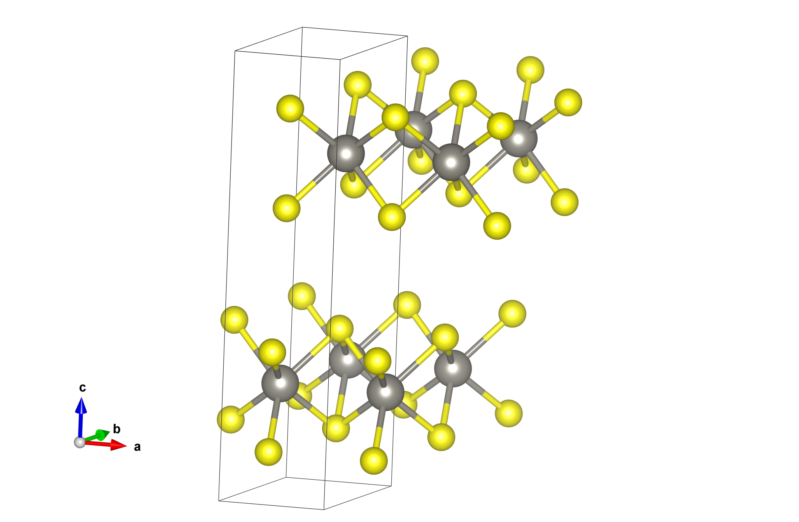

Tutorial
This tutorial is currently focused on AtomGraph objects, featurized using ElementFeatureDescriptors in a GraphNodeFeaturization, because these are the functionalities that are currently fully built, but we anticipate expanding it as more things are finished!
Creating/reading in a structure
Create "from scratch"
We can build an AtomGraph "manually," by specifying an adjacency matrix and directly building the graph from that. Here I'll build a fictitious graph that's just an equiweighted triangle of carbon atoms:
julia> adj_mat = Float32.([0 1 1; 1 0 1; 1 1 0]);
julia> triangle_C = AtomGraph(adj_mat, ["C", "C", "C"])
AtomGraph{SimpleWeightedGraphs.SimpleWeightedGraph{Int64, Float32}} with 3 nodes, 3 edges
atoms: ["C", "C", "C"]If you're working in an IDE that supports graphics output, you can also call visualize(triangle_C) to see the "ball-and-stick" graph.
Reading from file
In a "real" application, you'll likely be reading structures from files such as .cif, .xyz, etc. Here, we'll read in the structure of WS<sub>2</sub>, downloaded from the Materials Project:
julia> WS2 = AtomGraph("mp-224.cif")
┌ Warning: Your cutoff radius is quite large relative to the size of your unit cell. This may cause issues with neighbor list generation, and will definitely cause a very dense graph. To avoid issues, I'm setting it to be approximately equal to the smallest unit cell dimension.
└ @ ChemistryFeaturization.Utils.GraphBuilding ~/Chemellia/ChemistryFeaturization.jl/src/utils/graph_building.jl:174
AtomGraph{Crystal} mp-224 with 6 nodes, 6 edges
atoms: ["W", "W", "S", "S", "S", "S"]
The graph is automatically assigned an id based on the filename it was read from, but you can pass a value to override this and name it something else.
If you visualize this graph as above, you'll notice that it has two disconnected components. This isn't too surprising if we look at the 3D structure of this compound:  It's a two-dimensional material with two formula units per unit cell! Another way to see the disconnectedness of the graph is to index into the adjacency matrix in a particularly illustrative order:
julia> WS2.graph[[1,4,6,2,3,5]].weights
6×6 SparseArrays.SparseMatrixCSC{Float64, Int64} with 12 stored entries:
⋅ 1.0 1.0 ⋅ ⋅ ⋅
1.0 ⋅ 0.19762 ⋅ ⋅ ⋅
1.0 0.19762 ⋅ ⋅ ⋅ ⋅
⋅ ⋅ ⋅ ⋅ 1.0 1.0
⋅ ⋅ ⋅ 1.0 ⋅ 0.19762
⋅ ⋅ ⋅ 1.0 0.19762 ⋅However, we have options in how we actually construct the graph. The default option is based on the scheme from the original cgcnn.py implementation, which essentially involves setting a maximum neighbor distance and a maximum number of neighbors. However, in contrast to that implementation, we construct weighted graphs (with the user having an ability to specify the weight decay function with separation distance; it defaults to inverse-square).
An arguably more physical way to construct neighbor lists and graphs is by doing a Voronoi partition of the atomic coordinates. In this scheme, the neighbor list of an atom is any atom with which its Voronoi polyhedron shares a face, and the edge weights can be determined using the areas of the faces. Let's try that with our WS<sub>2</sub> structure...
julia> WS2_v = AtomGraph(joinpath("..", "files", "mp-224.cif"), use_voronoi=true);
julia> WS2_v.graph[[1,4,6,2,3,5]].weights
6×6 SparseArrays.SparseMatrixCSC{Float64, Int64} with 22 stored entries:
0.371678 0.970448 0.970448 ⋅ ⋅ ⋅
0.970448 1.0 0.0231855 ⋅ ⋅ 0.31894
0.970448 0.0231855 1.0 ⋅ 0.31894 ⋅
⋅ ⋅ ⋅ 0.371678 0.970448 0.970448
⋅ ⋅ 0.31894 0.970448 1.0 0.0231855
⋅ 0.31894 ⋅ 0.970448 0.0231855 1.0(You can, of course, also visualize this one in your IDE)
Batch processing
One final note for this section: the AtomGraph constructor broadcasts! So if you have a directory full of structure files (say, strucs/), you can get a list of AtomGraph objects by:
ags = AtomGraph.(readdir("strucs/", join=true))Building feature descriptors
What types of features of our structure do we want to encode in our graph? Let's keep things simple for now and consider features that can be encoded only by knowing the elemental identity of a given atom (node in our graph). The package includes a bunch of built-in data, and you can also provide your own for features we haven't included!
We can easily construct these for built-in features...
julia> block = ElementFeatureDescriptor("Block") # categorical feature denoting s-, p-, d-, or f-block elements
ElementFeature Block:
categorical: true
encoded length: 4
julia> amass = ElementFeatureDescriptor("Atomic mass") # continuous-valued feature
ElementFeature Atomic mass:
categorical: false
encoded length: 10But suppose you have another feature that's not included. You can easily provide a lookup table (or even an entire custom encoding function!) yourself, like so...
julia> using DataFrames;
julia> lookup_table = DataFrame(["C" 42; "As" 0], [:Symbol, :MeaningOfLife]); # make a custom lookup table for another feature
julia> meaning = ElementFeatureDescriptor("MeaningOfLife", lookup_table)
ElementFeature MeaningOfLife:
categorical: true
encoded length: 2Note that by default, because there are a small number of possible values, ChemistryFeaturization assumes that we'd like to encode this feature categorically, i.e. one "bin" in a one-hot vector for every possible value. Suppose we instead wanted to encode it continuously and specify a number of bins to divide the range into. We can do that like this (here I also show how to change the number of bins for continuous-valued features, which defaults to 10):
julia> meaning = ElementFeatureDescriptor("MeaningOfLife", lookup_table, categorical=false, nbins=3)
ElementFeature MeaningOfLife:
categorical: false
encoded length: 3Building a featurization
Next, we can combine these feature descriptors into a featurization object, which allows convenient encoding of multiple features on a structure, and also combining of those encoded features in a manner appropriate for feeding into a model. In the case of GraphNodeFeaturization, we construct a column vector for each node in an AtomGraph by concatenating encoded features together, and then stack these vectors horizontally to form a feature matrix that we could feed into an AtomicGraphNets model.
This featurization has a convenience constructor that will build the ElementFeatureDescriptors if you just pass in names of features, but with our custom lookup table feature, we will construct it by directly passing the feature descriptors:
julia> fzn = GraphNodeFeaturization([block, amass, meaning])
GraphNodeFeaturization encoding 3 features:
ElementFeature Block
ElementFeature Atomic mass
ElementFeature MeaningOfLifeFeaturizing structures
Okay, now we're ready to encode the values of our features! Note that we can encode feature descriptors individually with two different syntax options (we'll use the same triangle_C graph we built above)...
julia> encode(block, triangle_C) # calling the encode fcn
4×3 Matrix{Float64}:
0.0 0.0 0.0
1.0 1.0 1.0
0.0 0.0 0.0
0.0 0.0 0.0
julia> block(triangle_C) # object itself is callable to give value
3-element Vector{String}:
"p"
"p"
"p"Let's encode the whole featurization!
julia> encode(fzn, triangle_C)
17×3 Matrix{Float64}:
0.0 0.0 0.0
1.0 1.0 1.0
0.0 0.0 0.0
0.0 0.0 0.0
0.0 0.0 0.0
0.0 0.0 0.0
0.0 0.0 0.0
0.0 0.0 0.0
1.0 1.0 1.0
0.0 0.0 0.0
0.0 0.0 0.0
0.0 0.0 0.0
0.0 0.0 0.0
0.0 0.0 0.0
0.0 0.0 0.0
0.0 0.0 0.0
1.0 1.0 1.0If we want to attach the encoded features to the graph, we can use the featurize function, which returns a FeaturizedAtoms object...
julia> featurized = featurize(triangle_C, fzn)
FeaturizedAtoms{AtomGraph{SimpleWeightedGraphs.SimpleWeightedGraph{Int64, Float32}}, GraphNodeFeaturization} with 17 x 3 encoded features:
Atoms: AtomGraph{SimpleWeightedGraphs.SimpleWeightedGraph{Int64, Float32}} with 3 nodes, 3 edges
Featurization: GraphNodeFeaturization encoding 3 featuresDecoding encoded features
If we have a FeaturizedAtoms object, we can decode it directly:
julia> collect(decode(featurized)) # collect as the is result is truncated in the doctest for `decode(featurized)`
3-element Vector{Pair{Integer, Dict{String, Any}}}:
2 => Dict("MeaningOfLife" => (28.0, 42.0), "Block" => "p", "Atomic mass" => (9.319257777745117, 16.250547067714365))
3 => Dict("MeaningOfLife" => (28.0, 42.0), "Block" => "p", "Atomic mass" => (9.319257777745117, 16.250547067714365))
1 => Dict("MeaningOfLife" => (28.0, 42.0), "Block" => "p", "Atomic mass" => (9.319257777745117, 16.250547067714365))
julia> typeof(decode(featurized)) # check type here, as the above doctest performs `collect` and returns a different type
Dict{Integer, Dict{String, Any}}The decode function also works with encoded features and a feature descriptor or featurization passed in separately.